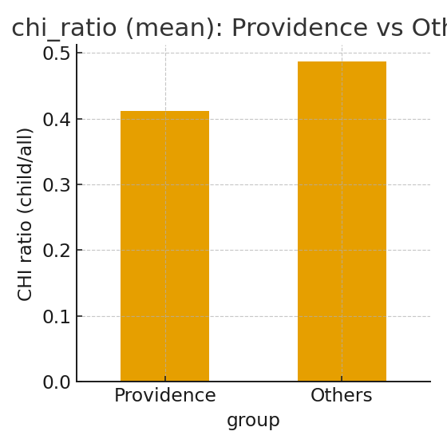

| Category | Indicators / Examples | Operationalization | Status |
|---|---|---|---|
| Topic maintenance | 継続発話、再導入、話題遷移の安定性 | 参照表現の維持/再導入率（child発話ベース） | 近似実装（維持/再導入） |
| Turn-taking | 交替頻度、被り/沈黙 | 将来：タイムスタンプ or 交互出現で近似 | TODO |
| Discourse markers | well, so, and then ... | 辞書ベース頻度（per_utt / per_1k） | 実装済 |
| Disfluency | um, uh, repetitions | 辞書＋正規化頻度（per_utt / per_1k） | 実装済 |
| Pronouns | 1st/2nd/3rd person | 頻度（per_1k） | 実装済 |
| Mental state verbs | think, know, want ... | 辞書＋頻度（per_1k） | 実装済 |
| Reference expressions | 導入/維持/再導入/曖昧 | 先頭大文字語の連鎖＋代名詞近似 | 実装済（近似） |
| Figurative/Implicature | 比喩・含意・皮肉 | 将来：手動辞書＋文脈ルール | TODO |
注: 先生レビューを踏まえたカテゴリ化。MVPは英語のみ、参照表現はルール近似。
Numeric summary (Providence vs Others):


Data: features_child_{asd,td}.csv + session_metrics_{asd,td}.csv